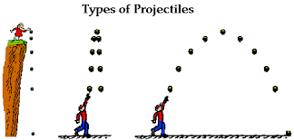

1501 Lab 4
Online textbook:
bookshelf.vitalsource.com
iOLab for Scientists and Engineers
Lab 3: Force and Acceleration
You will need:
IOLab device (+included attachments)
USB-A connection
Smooth table
Heavy weight (placeholder)
Leftover comments from Lab 3
Include name of lab partners
Zoom in on vertical scale of graphs
Aim for minimal,
but complete
, formatting
Equations from Kinematics depend on constant $a$
Uncertainty is not always truly represented by $\sigma$
Tell me what accelerometer is measuring
What numerical value would the iOLab accelerometer read if falling at terminal velocity?
Polls
Questions 4–6

https://www.mwit.ac.th/~physicslab/applet_04/physics_classroom/Class/vectors/u3l2a.html
To be completed
Follow along online lab manual. Complete "Lab 3"
Submit a report to Brightspace
Hints
Keep pushes deliberate and brief